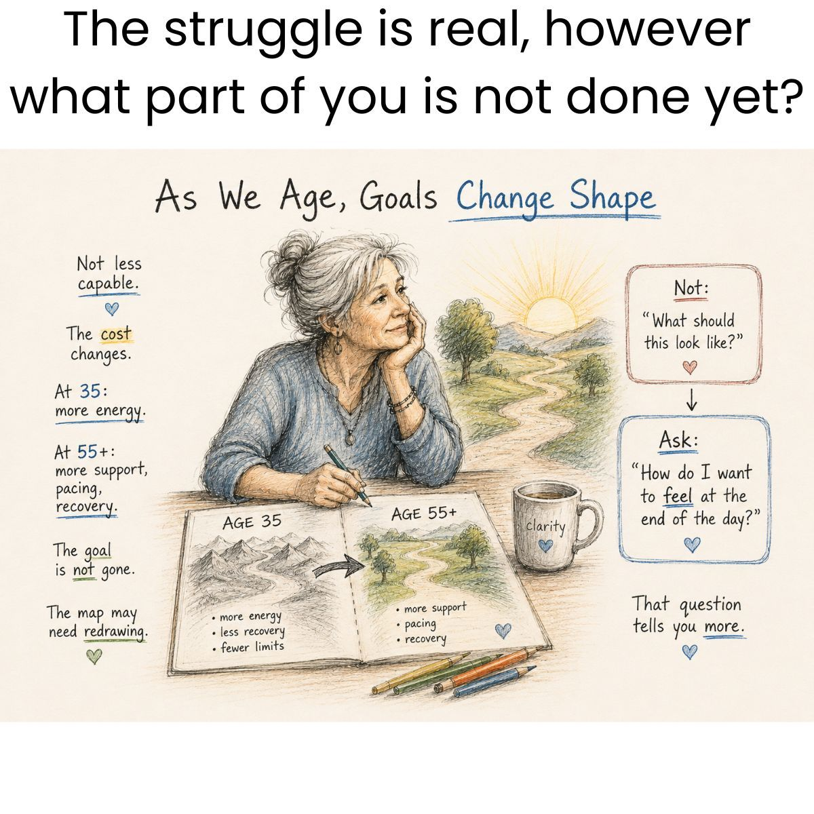
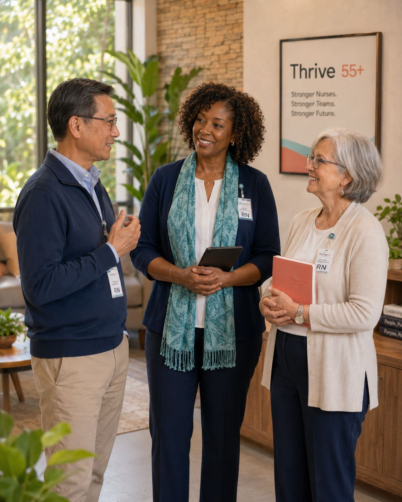

The Career Direction Method for experienced nurses — a six-week cohort program with Sue Adair, BSN, RN & Alyson.
Name the strain. Capture your value. Investigate your options.
Where are you joining from tonight, and how many years have you been a nurse?
Both can be true — and there's a name for what you're feeling. That's what these six weeks are for.
Does that sentence describe you? Yes, most days · Some days · Not yet — but I'm curious
Career direction
Founder of Thrive 55+ Nursing Advantage. Decades at the bedside — and the creator of the three-part method you'll learn here.
Financial readiness
A career decision is also a financial decision. Alyson leads Week 5, so your direction is informed on both sides.
In the app, anytime
An AI coach grounded in this course. She'll ask more questions than she answers — and she joins you right after tonight.
You'll hear from each other every single week — that's by design. A few agreements to make this room safe:
Small rooms of 3–4. Everyone shares:
Hold on to your one word — you'll need it when we come back.
Type your one word for how work feels right now — and then just watch the screen for a moment.
Look at those words. Whatever yours was — you are not the only one.
What is wearing you down?
Score your body load, interruption load, and change load from 1–10. Strain isn't weakness — it's information.
What do you bring with you?
Name the strengths you keep dismissing because they feel ordinary. AI cannot duplicate them.
What's worth investigating next?
Reconnaissance turns fear into information: study the work, ask people who know it, compare what you learn.
Not one decision made in a panic — a method you can learn, repeat, and walk with a cohort beside you.
Strain arrives in three forms — and you can name yours:
Which one do you feel most right now? Type B (body), I (interruption), or C (change).
And we measure it together: a short survey this week, the same one at the end. You'll see your own change.

The week starts here, together — teaching, discussion, and each other.
Unlock after the webinar. None over eight minutes.
One workbook move per week. Small on purpose.
Bring what you found. Your findings teach the room.
Lessons unlock after each webinar — the cohort moves together, and nobody is behind.
Take the two-minute starting-point survey, then click “I attended this webinar” in the app — Week 0, your whole toolkit, and the downloadable workbook PDF open with it. You can grab the PDF before we hang up.
Reading the room before a problem has a name. Translating jargon into kindness. Holding a shift together that should have fallen apart.
Name one thing you do at work that you brush off as ordinary. We'll show you it isn't.

Seven questions, two minutes. The same ones return in Week 6, so you can see your change.
Mark tonight's webinar attended — everything opens, and you can download your workbook PDF.
“You're Not Done: Start Here” — five minutes.
In your workbook: “I want to leave this program with ______.”
Share your intention in the chat: “I want to leave with…”
Ask anything — on the mic or in the chat.
Next week — Name the Strain: live teaching, and scoring your three loads together.
Name the strain. Capture your value. Investigate your options.
© 2026 Sue Adair | Thrive 55+ Nursing Advantage
→ space next · ← previous · Home/End first/last
N presenter notes · ? this help · Esc close
Print (Ctrl/Cmd-P) for one slide per page — notes stay hidden.